Kaggle - Predicting Bike Sharing Demand¶
Problem Statement
Bike sharing systems are a means of renting bicycles where the process of obtaining membership, rental, and bike return is automated via a network of kiosk locations throughout a city. Using these Bike Sharing systems, people rent a bike from one location and return it to a different or same place on need basis. People can rent a bike through membership (mostly regular users) or on demand basis (mostly casual users). This process is controlled by a network of automated kiosk across the city.

In Kaggle Bike Sharing Demand, the participants were asked to forecast bike rental demand of Bike sharing program in Washington, D.C. based on historical usage patterns in relation with weather, time and other data.
Evaluation
Submissions are evaluated one the Root Mean Squared Logarithmic Error (RMSLE). The RMSLE is calculated as
where:
\(n\) is the number of hours in the test set
\(p_i\) is your predicted count
\(a_i\) is the actual count
log(x) is the natural logarithm
I have compiled this notebook by collating theory and codes from other blogs as well along with my own implementations. Wherever I have copied the theory/codes verbatim I have highlighted the references with [1] to give the authors their due credit. Please refer to the reference section at the end of the notebook for the original blogs of the respective authors.
import numpy as np
import pandas as pd
from sklearn.ensemble import RandomForestRegressor, GradientBoostingRegressor
import seaborn as sns
import matplotlib.pyplot as plt
from IPython.core.interactiveshell import InteractiveShell
InteractiveShell.ast_node_interactivity = "all"
pd.set_option('display.max_columns', 500)
pd.set_option('display.max_colwidth', 30)
#sns.set_style("whitegrid")
#plt.style.use('bmh')
plt.style.use('seaborn-whitegrid')
# this allows plots to appear directly in the notebook
%matplotlib inline
%config InlineBackend.figure_format = 'retina'
1. Hypothesis Generation¶
Before exploring the data to understand the relationship between variables, it is recommended that we focus on hypothesis generation first. Now, this might sound counter-intuitive for solving a data science problem, but before exploring data, we should spend some time thinking about the business problem, gaining the domain knowledge and may be gaining first hand experience of the problem.
How does it help? This practice usually helps us form better features later on, which are not biased by the data available in the dataset. At this stage, we are expected to posses structured thinking i.e. a thinking process which takes into consideration all the possible aspects of a particular problem.
Here are some of the hypothesis which could influence the demand of bikes:
Hourly trend: There must be high demand during office timings. Early morning and late evening can have different trend (cyclist) and low demand during 10:00 pm to 4:00 am.
Daily Trend: Registered users demand more bike on weekdays as compared to weekend or holiday.
Rain: The demand of bikes will be lower on a rainy day as compared to a sunny day. Similarly, higher humidity will cause to lower the demand and vice versa.
Temperature: In India, temperature has negative correlation with bike demand. But, after looking at Washington’s temperature graph, we presume it may have positive correlation.
Pollution: If the pollution level in a city starts soaring, people may start using Bike (it may be influenced by government / company policies or increased awareness).
Time: Total demand should have higher contribution of registered user as compared to casual because registered user base would increase over time.
Traffic: It can be positively correlated with Bike demand. Higher traffic may force people to use bike as compared to other road transport medium like car, taxi etc.
2. Understanding the Data Set¶
The dataset shows hourly rental data for two years (2011 and 2012). The training data set is for the first 19 days of each month. The test dataset is from 20th day to month’s end. We are required to predict the total count of bikes rented during each hour covered by the test set.
In the training data set, they have separately given bike demand by registered, casual users and sum of both is given as count.
Training data set has 12 variables (see below) and Test has 9 (excluding registered, casual and count).
Independent Variables
datetime: date and hour in "mm/dd/yyyy hh:mm" format
season: Four categories-> 1 = spring, 2 = summer, 3 = fall, 4 = winter
holiday: whether the day is a holiday or not (1/0)
workingday: whether the day is neither a weekend nor holiday (1/0)
weather: Four Categories of weather
1-> Clear, Few clouds, Partly cloudy
2-> Mist + Cloudy, Mist + Broken clouds, Mist + Few clouds, Mist
3-> Light Snow and Rain + Thunderstorm + Scattered clouds, Light Rain + Scattered clouds
4-> Heavy Rain + Ice Pallets + Thunderstorm + Mist, Snow + Fog
temp: hourly temperature in Celsius
atemp: "feels like" temperature in Celsius
humidity: relative humidity
windspeed: wind speed
Dependent Variables
registered: number of registered user casual: number of non-registered user count: number of total rentals (registered + casual)
3. Importing Data Set and Basic Data Exploration¶
train_df = pd.read_csv('data/train.csv')
train_df['data_set'] = 'train'
train_df.head(5)
| datetime | season | holiday | workingday | weather | temp | atemp | humidity | windspeed | casual | registered | count | data_set | |
|---|---|---|---|---|---|---|---|---|---|---|---|---|---|
| 0 | 2011-01-01 00:00:00 | 1 | 0 | 0 | 1 | 9.84 | 14.395 | 81 | 0.0 | 3 | 13 | 16 | train |
| 1 | 2011-01-01 01:00:00 | 1 | 0 | 0 | 1 | 9.02 | 13.635 | 80 | 0.0 | 8 | 32 | 40 | train |
| 2 | 2011-01-01 02:00:00 | 1 | 0 | 0 | 1 | 9.02 | 13.635 | 80 | 0.0 | 5 | 27 | 32 | train |
| 3 | 2011-01-01 03:00:00 | 1 | 0 | 0 | 1 | 9.84 | 14.395 | 75 | 0.0 | 3 | 10 | 13 | train |
| 4 | 2011-01-01 04:00:00 | 1 | 0 | 0 | 1 | 9.84 | 14.395 | 75 | 0.0 | 0 | 1 | 1 | train |
test_df = pd.read_csv('data/test.csv')
test_df['data_set'] = 'test'
test_df.head(5)
| datetime | season | holiday | workingday | weather | temp | atemp | humidity | windspeed | data_set | |
|---|---|---|---|---|---|---|---|---|---|---|
| 0 | 2011-01-20 00:00:00 | 1 | 0 | 1 | 1 | 10.66 | 11.365 | 56 | 26.0027 | test |
| 1 | 2011-01-20 01:00:00 | 1 | 0 | 1 | 1 | 10.66 | 13.635 | 56 | 0.0000 | test |
| 2 | 2011-01-20 02:00:00 | 1 | 0 | 1 | 1 | 10.66 | 13.635 | 56 | 0.0000 | test |
| 3 | 2011-01-20 03:00:00 | 1 | 0 | 1 | 1 | 10.66 | 12.880 | 56 | 11.0014 | test |
| 4 | 2011-01-20 04:00:00 | 1 | 0 | 1 | 1 | 10.66 | 12.880 | 56 | 11.0014 | test |
3.1. Combine both Train and Test Data set (to understand the distribution of independent variable together).¶
# combine train and test data into one df
test_df['registered'] = 0
test_df['casual'] = 0
test_df['count'] = 0
all_df = pd.concat([train_df, test_df])
all_df.head(5)
| atemp | casual | count | data_set | datetime | holiday | humidity | registered | season | temp | weather | windspeed | workingday | |
|---|---|---|---|---|---|---|---|---|---|---|---|---|---|
| 0 | 14.395 | 3 | 16 | train | 2011-01-01 00:00:00 | 0 | 81 | 13 | 1 | 9.84 | 1 | 0.0 | 0 |
| 1 | 13.635 | 8 | 40 | train | 2011-01-01 01:00:00 | 0 | 80 | 32 | 1 | 9.02 | 1 | 0.0 | 0 |
| 2 | 13.635 | 5 | 32 | train | 2011-01-01 02:00:00 | 0 | 80 | 27 | 1 | 9.02 | 1 | 0.0 | 0 |
| 3 | 14.395 | 3 | 13 | train | 2011-01-01 03:00:00 | 0 | 75 | 10 | 1 | 9.84 | 1 | 0.0 | 0 |
| 4 | 14.395 | 0 | 1 | train | 2011-01-01 04:00:00 | 0 | 75 | 1 | 1 | 9.84 | 1 | 0.0 | 0 |
all_df.tail(5)
| atemp | casual | count | data_set | datetime | holiday | humidity | registered | season | temp | weather | windspeed | workingday | |
|---|---|---|---|---|---|---|---|---|---|---|---|---|---|
| 6488 | 12.880 | 0 | 0 | test | 2012-12-31 19:00:00 | 0 | 60 | 0 | 1 | 10.66 | 2 | 11.0014 | 1 |
| 6489 | 12.880 | 0 | 0 | test | 2012-12-31 20:00:00 | 0 | 60 | 0 | 1 | 10.66 | 2 | 11.0014 | 1 |
| 6490 | 12.880 | 0 | 0 | test | 2012-12-31 21:00:00 | 0 | 60 | 0 | 1 | 10.66 | 1 | 11.0014 | 1 |
| 6491 | 13.635 | 0 | 0 | test | 2012-12-31 22:00:00 | 0 | 56 | 0 | 1 | 10.66 | 1 | 8.9981 | 1 |
| 6492 | 13.635 | 0 | 0 | test | 2012-12-31 23:00:00 | 0 | 65 | 0 | 1 | 10.66 | 1 | 8.9981 | 1 |
# lowercase column names
all_df.columns = map(str.lower, all_df.columns)
all_df.columns
Index(['atemp', 'casual', 'count', 'data_set', 'datetime', 'holiday',
'humidity', 'registered', 'season', 'temp', 'weather', 'windspeed',
'workingday'],
dtype='object')
# parse datetime colum & add new time related columns
dt = pd.DatetimeIndex(all_df['datetime'])
all_df.set_index(dt, inplace=True)
all_df.head(5)
| atemp | casual | count | data_set | datetime | holiday | humidity | registered | season | temp | weather | windspeed | workingday | |
|---|---|---|---|---|---|---|---|---|---|---|---|---|---|
| datetime | |||||||||||||
| 2011-01-01 00:00:00 | 14.395 | 3 | 16 | train | 2011-01-01 00:00:00 | 0 | 81 | 13 | 1 | 9.84 | 1 | 0.0 | 0 |
| 2011-01-01 01:00:00 | 13.635 | 8 | 40 | train | 2011-01-01 01:00:00 | 0 | 80 | 32 | 1 | 9.02 | 1 | 0.0 | 0 |
| 2011-01-01 02:00:00 | 13.635 | 5 | 32 | train | 2011-01-01 02:00:00 | 0 | 80 | 27 | 1 | 9.02 | 1 | 0.0 | 0 |
| 2011-01-01 03:00:00 | 14.395 | 3 | 13 | train | 2011-01-01 03:00:00 | 0 | 75 | 10 | 1 | 9.84 | 1 | 0.0 | 0 |
| 2011-01-01 04:00:00 | 14.395 | 0 | 1 | train | 2011-01-01 04:00:00 | 0 | 75 | 1 | 1 | 9.84 | 1 | 0.0 | 0 |
# Indexing by datetime let's us to select rows by specifying time ranges
all_df['2011-01-01 01:00:00':'2011-01-01 03:00:00']
| atemp | casual | count | data_set | datetime | holiday | humidity | registered | season | temp | weather | windspeed | workingday | |
|---|---|---|---|---|---|---|---|---|---|---|---|---|---|
| datetime | |||||||||||||
| 2011-01-01 01:00:00 | 13.635 | 8 | 40 | train | 2011-01-01 01:00:00 | 0 | 80 | 32 | 1 | 9.02 | 1 | 0.0 | 0 |
| 2011-01-01 02:00:00 | 13.635 | 5 | 32 | train | 2011-01-01 02:00:00 | 0 | 80 | 27 | 1 | 9.02 | 1 | 0.0 | 0 |
| 2011-01-01 03:00:00 | 14.395 | 3 | 13 | train | 2011-01-01 03:00:00 | 0 | 75 | 10 | 1 | 9.84 | 1 | 0.0 | 0 |
# find missing values in dataset if any
all_df.isnull().values.sum()
0
3.2. Understand the distribution of numerical variables and generate a frequency table for numeric variables.¶
plt.figure(figsize=(20,15))
plt.subplot(421)
all_df['season'].plot.hist(bins=10, color='blue', label='Histogram of Season', edgecolor='black')
plt.legend(loc='best')
plt.subplot(422)
all_df['weather'].plot.hist(bins=10, color='green', label='Histogram of Weather', edgecolor='black')
plt.legend(loc='best')
plt.subplot(423)
all_df['humidity'].plot.hist(bins=10, color='orange', label='Histogram of Humidity', edgecolor='black')
plt.legend(loc='best')
plt.subplot(424)
all_df['holiday'].plot.hist(bins=10, color='pink', label='Histogram of Holiday', edgecolor='black')
plt.legend(loc='best')
plt.subplot(425)
all_df['workingday'].plot.hist(bins=10, color='red', label='Histogram of Working Day', edgecolor='black')
plt.legend(loc='best')
plt.subplot(426)
all_df['temp'].plot.hist(bins=10, color='yellow', label='Histogram of Temperature', edgecolor='black')
plt.legend(loc='best')
plt.subplot(427)
all_df['atemp'].plot.hist(bins=10, color='cyan', label='Histogram of Feels Like Temp', edgecolor='black')
plt.legend(loc='best')
plt.subplot(428)
all_df['windspeed'].plot.hist(bins=10, color='purple', label='Histogram of Windpseed', edgecolor='black')
plt.legend(loc='best')
plt.tight_layout();
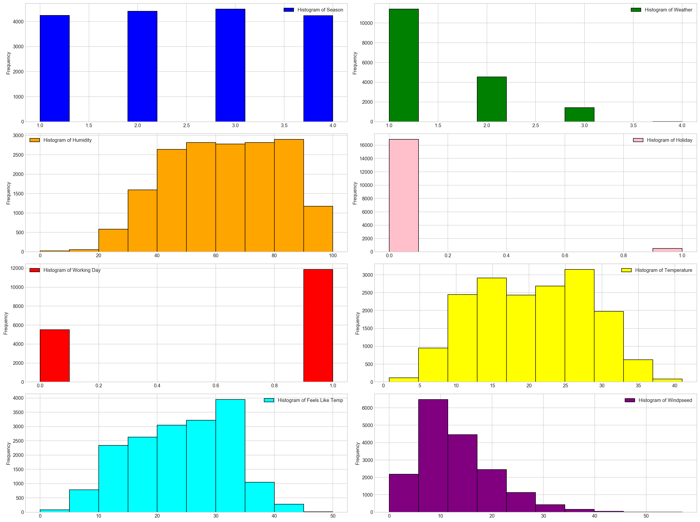
Few inferences can be drawn by looking at the these histograms:
Season has four categories of almost equal distribution
Weather 1 has higher contribution i.e. mostly clear weather.
As expected, mostly working days and variable holiday is also showing a similar inference. You can use the code above to look at the distribution in detail. Here you can generate a variable for weekday using holiday and working day. Incase, if both have zero values, then it must be a working day.
Variables temp, atemp, humidity and windspeed looks naturally distributed.
# logarithmic transformation of dependent cols
# (adding 1 first so that 0 values don't become -inf)
for col in ['casual', 'registered', 'count']:
all_df['%s_log' % col] = np.log(all_df[col] + 1)
all_df['date'] = dt.date
all_df['day'] = dt.day
all_df['month'] = dt.month
all_df['year'] = dt.year
all_df['hour'] = dt.hour
all_df['dow'] = dt.dayofweek
all_df['woy'] = dt.weekofyear
# How many columns have null values
all_df.isnull().sum()
atemp 0
casual 0
count 0
data_set 0
datetime 0
holiday 0
humidity 0
registered 0
season 0
temp 0
weather 0
windspeed 0
workingday 0
casual_log 0
registered_log 0
count_log 0
date 0
day 0
month 0
year 0
hour 0
dow 0
woy 0
dtype: int64
# interpolate weather, temp, atemp, humidity, windspeed
all_df["weather"] = all_df["weather"].interpolate(method='time').apply(np.round)
all_df["temp"] = all_df["temp"].interpolate(method='time')
all_df["atemp"] = all_df["atemp"].interpolate(method='time')
all_df["humidity"] = all_df["humidity"].interpolate(method='time').apply(np.round)
all_df["windspeed"] = all_df["windspeed"].interpolate(method='time')
# add a count_season column using join
by_season = all_df[all_df['data_set'] == 'train'].copy().groupby(['season'])[['count']].agg(sum)
by_season.columns = ['count_season']
all_df = all_df.join(by_season, on='season')
print(by_season)
count_season
season
1 312498
2 588282
3 640662
4 544034
by_season.plot(kind='barh')
plt.grid(True)
plt.show();
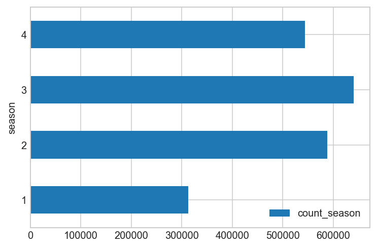
def get_day(day_start):
day_end = day_start + pd.offsets.DateOffset(hours=23)
return pd.date_range(day_start, day_end, freq="H")
# tax day
all_df.loc[get_day(pd.datetime(2011, 4, 15)), "workingday"] = 1
all_df.loc[get_day(pd.datetime(2012, 4, 16)), "workingday"] = 1
# thanksgiving friday
all_df.loc[get_day(pd.datetime(2011, 11, 25)), "workingday"] = 0
all_df.loc[get_day(pd.datetime(2012, 11, 23)), "workingday"] = 0
# tax day
all_df.loc[get_day(pd.datetime(2011, 4, 15)), "holiday"] = 0
all_df.loc[get_day(pd.datetime(2012, 4, 16)), "holiday"] = 0
# thanksgiving friday
all_df.loc[get_day(pd.datetime(2011, 11, 25)), "holiday"] = 1
all_df.loc[get_day(pd.datetime(2012, 11, 23)), "holiday"] = 1
#storms
all_df.loc[get_day(pd.datetime(2012, 5, 21)), "holiday"] = 1
#tornado
all_df.loc[get_day(pd.datetime(2012, 6, 1)), "holiday"] = 1
by_hour = all_df[all_df['data_set'] == 'train'].copy().groupby(['hour', 'workingday'])['count'].agg('sum').unstack()
by_hour.head(10)
| workingday | 0 | 1 |
|---|---|---|
| hour | ||
| 0 | 13633 | 11455 |
| 1 | 10384 | 4988 |
| 2 | 7654 | 2605 |
| 3 | 3666 | 1425 |
| 4 | 1230 | 1602 |
| 5 | 1280 | 7655 |
| 6 | 2719 | 31979 |
| 7 | 6318 | 90650 |
| 8 | 15380 | 149680 |
| 9 | 25324 | 75586 |
Hourly trend: There must be high demand during office timings. Early morning and late evening can have different trend (cyclist) and low demand during 10:00 pm to 4:00 am.
# rentals by hour, split by working day (or not)
by_hour.plot(kind='bar', figsize=(15,5), width=0.8);
plt.grid(True)
plt.tight_layout();
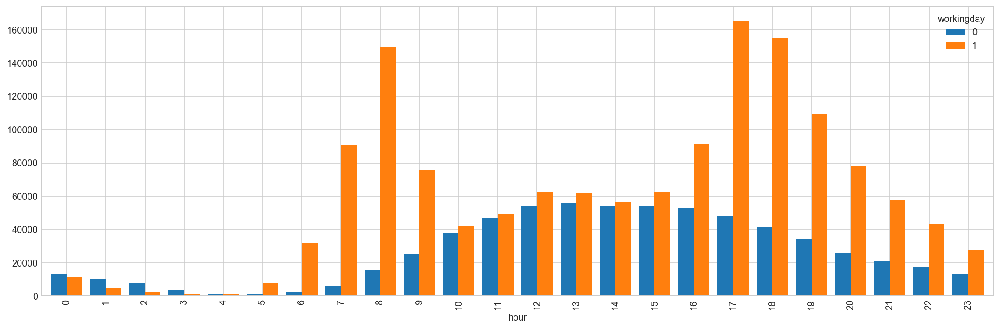
4. Hypothesis Testing (using multivariate analysis)¶
Till now, we have got a fair understanding of the data set. Now, let’s test the hypothesis which we had generated earlier. Here we have added some additional hypothesis from the dataset. Let’s test them one by one:
Hourly trend: We don’t have the variable ‘hour’ as part of data provides but we extracted it using the datetime column. Let’s plot the hourly trend of count over hours and check if our hypothesis is correct or not. We will separate train and test data set from combined one.
train_df = all_df[all_df['data_set'] == 'train'].copy()
#train_df.boxplot(column='count', by='hour', figsize=(15,5))
#plt.ylabel('Count of Users')
#plt.title("Boxplot of Count grouped by hour")
#plt.suptitle("") # get rid of the pandas autogenerated title
fig, ax = plt.subplots(figsize=(18, 5))
sns.boxplot(x=train_df['hour'], y=train_df['count'], ax=ax)
ax.set_ylabel('Count of Users')
ax.set_title("Boxplot of Count grouped by hour");
#plt.suptitle("") # get rid of the pandas autogenerated title
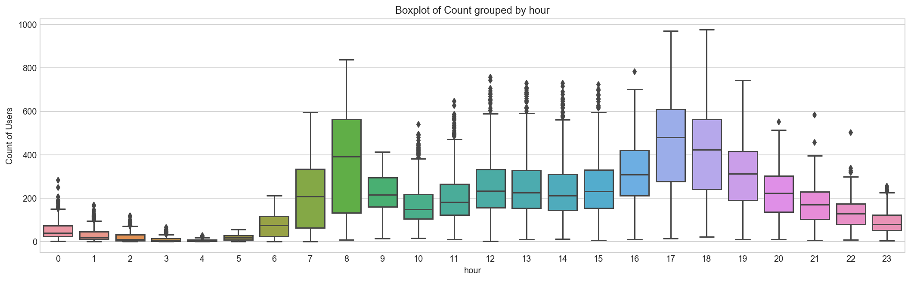
Above, we can see the trend of bike demand over hours. Quickly, we’ll segregate the bike demand in three categories:
High : 7-9 and 17-19 hours
Average : 10-16 hours
Low : 0-6 and 20-24 hours Here we have analyzed the distribution of total bike demand.
Let’s look at the distribution of registered and casual users separately.
Good Weather is most frequent in Fall[5]¶
season_map = {1:'Spring', 2:'Summer', 3:'Fall', 4:'Winter'}
good_weather = all_df[all_df['weather'] == 1][['hour', 'season']].copy()
data = pd.DataFrame({'count' : good_weather.groupby(["hour","season"]).size()}).reset_index()
data['season'] = data['season'].map(lambda d : season_map[d])
fig, ax = plt.subplots(figsize=(18, 5))
sns.pointplot(x=data["hour"], y=data["count"], hue=data["season"], ax=ax)
ax.set(xlabel='Hour Of The Day', ylabel='Good Weather Count', title="Good Weather By Hour Of The Day Across Season");
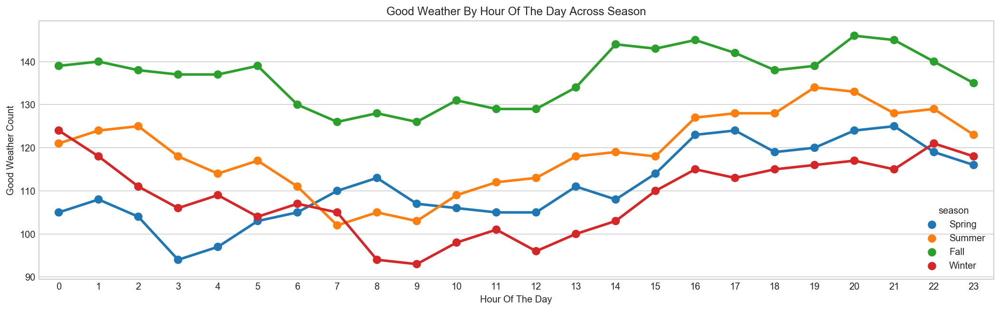
Normal Weather happens most frequent in Spring[5]¶
season_map = {1:'Spring', 2:'Summer', 3:'Fall', 4:'Winter'}
normal_weather = all_df[all_df['weather'] == 3][['hour', 'season']].copy()
data = pd.DataFrame({'count' : normal_weather.groupby(["hour","season"]).size()}).reset_index()
data['season'] = data['season'].map(lambda d : season_map[d])
data.sample(n=5)
| hour | season | count | |
|---|---|---|---|
| 50 | 12 | Fall | 12 |
| 46 | 11 | Fall | 11 |
| 3 | 0 | Winter | 11 |
| 63 | 15 | Winter | 19 |
| 33 | 8 | Summer | 18 |
fig, ax = plt.subplots(figsize=(18, 5))
sns.pointplot(x=data["hour"], y=data["count"], hue=data["season"], ax=ax)
ax.set(xlabel='Hour Of The Day', ylabel='Normal Weather Count', title="Normal Weather By Hour Of The Day Across Season");
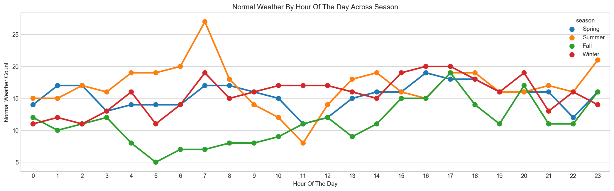
data = pd.pivot_table(data, values='count', columns='season', index='hour')
data.sample(5)
| season | Fall | Spring | Summer | Winter |
|---|---|---|---|---|
| hour | ||||
| 18 | 14 | 18 | 19 | 18 |
| 4 | 8 | 14 | 19 | 16 |
| 15 | 15 | 16 | 16 | 19 |
| 12 | 12 | 12 | 14 | 17 |
| 11 | 11 | 11 | 8 | 17 |
fig, ax = plt.subplots(figsize=(12, 5))
data.plot.area(stacked=False, ax=ax)
ax.set(xlabel='Hour Of The Day', ylabel='Normal Weather Count', title="Normal Weather By Hour Of The Day Across Season");
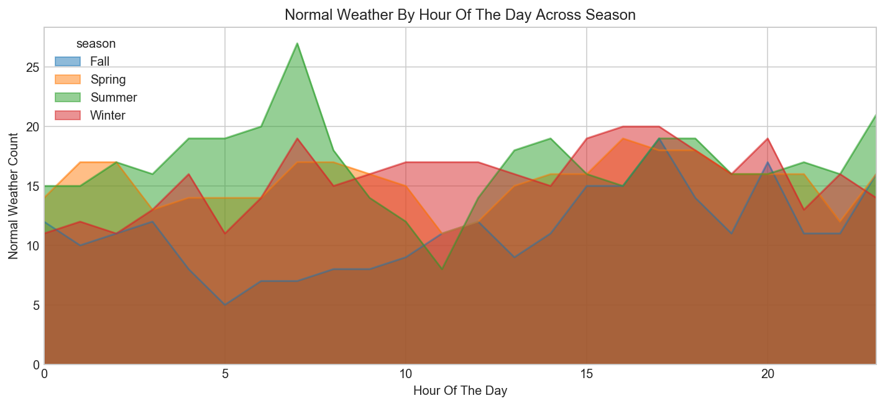
Bad Weather happens most frequent in Summer & Winter[5]¶
season_map = {1:'Spring', 2:'Summer', 3:'Fall', 4:'Winter'}
bad_weather = all_df[all_df['weather'] == 3][['hour', 'season']].copy()
data = pd.DataFrame({'count' : bad_weather.groupby(["hour","season"]).size()}).reset_index()
data['season'] = data['season'].map(lambda d : season_map[d])
fig, ax = plt.subplots(figsize=(18, 5))
sns.pointplot(x=data["hour"], y=data["count"], hue=data["season"], ax=ax)
ax.set(xlabel='Hour Of The Day', ylabel='Bad Weather Count', title="Bad Weather By Hour Of The Day Across Season");
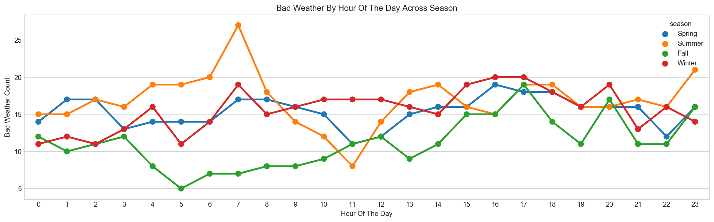
Bikes are rented more in Good Weather and much less in Bad Weather¶
weather_map = {1:'Good', 2:'Normal', 3:'Bad', 4:'Worse'}
data = pd.DataFrame(train_df.groupby(["hour","weather"], sort=True)["count"].mean()).reset_index()
data['weather'] = data['weather'].map(lambda d : weather_map[d])
fig, ax = plt.subplots(figsize=(18, 5))
sns.pointplot(x=data["hour"], y=data["count"], hue=data["weather"], ax=ax)
ax.set(xlabel='Hour Of The Day', ylabel='Users Count', title="Average Users Count By Hour Of The Day Across Weather");
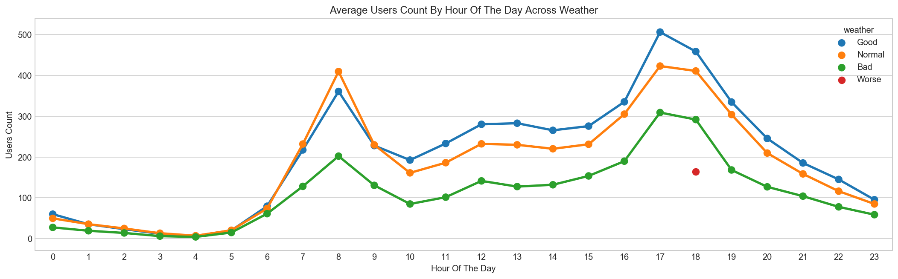
Bikes are rented more in Fall and much less in Spring¶
season_map = {1:'Spring', 2:'Summer', 3:'Fall', 4:'Winter'}
data = pd.DataFrame({'mean':train_df.groupby(["hour","season"], sort=True)["count"].mean()}).reset_index()
data['season'] = data['season'].map(lambda d : season_map[d])
data.sample(n=5)
| hour | season | mean | |
|---|---|---|---|
| 48 | 12 | Spring | 154.412281 |
| 92 | 23 | Spring | 45.333333 |
| 27 | 6 | Winter | 82.254386 |
| 89 | 22 | Summer | 154.192982 |
| 1 | 0 | Summer | 58.473684 |
fig, ax = plt.subplots(figsize=(18, 5))
sns.pointplot(x=data["hour"], y=data["mean"], hue=data["season"], ax=ax)
ax.set(xlabel='Hour Of The Day', ylabel='Users Count', title="Average Users Count By Hour Of The Day Across Season");
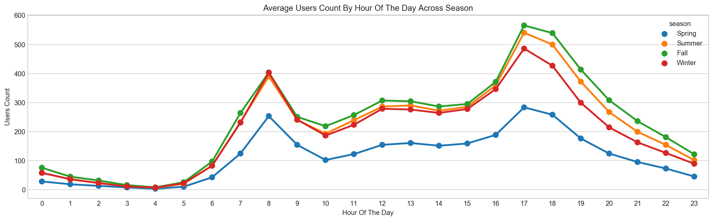
Bikes are rented mostly for Morning/Evening commutes on Weekdays, and mostly Daytime rides on Weekends¶
day_map = {0:'Monday', 1:'Tuesday', 2:'Wednesday', 3:'Thursday', 4:'Friday', 5:'Saturday', 6:'Sunday'}
hueOrder = ["Sunday", "Monday", "Tuesday", "Wednesday", "Thursday", "Friday", "Saturday"]
data = pd.DataFrame({'mean':train_df.groupby(["hour","dow"], sort=True)["count"].mean()}).reset_index()
data['dow'] = data['dow'].map(lambda d : day_map[d])
data.sample(n=5)
| hour | dow | mean | |
|---|---|---|---|
| 103 | 14 | Saturday | 398.409091 |
| 134 | 19 | Tuesday | 356.123077 |
| 55 | 7 | Sunday | 34.742424 |
| 78 | 11 | Tuesday | 145.609375 |
| 67 | 9 | Friday | 262.406250 |
fig, ax = plt.subplots(figsize=(18, 5))
sns.pointplot(x=data["hour"], y=data["mean"], hue=data["dow"], hue_order=hueOrder, ax=ax)
ax.set(xlabel='Hour Of The Day', ylabel='Users Count', title="Average Users Count By Hour Of The Day Across Weekdays");
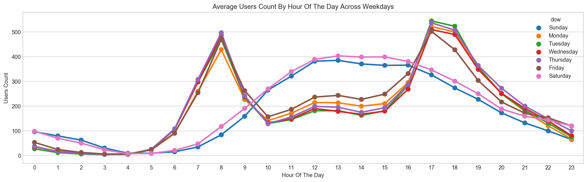
Renting patterns of Bikes are significantly different between Registered and Casual Users¶
#fig, axs = plt.subplots(1, 2, figsize=(15,5), sharex=False, sharey=False)
#train_df.boxplot(column='casual', by='hour', ax=axs[0])
#axs[0].set_ylabel('casual users')
#axs[0].set_title('')
#train_df.boxplot(column='registered', by='hour', ax=axs[1])
#axs[1].set_ylabel('registered users')
#axs[1].set_title('')
fig, axs = plt.subplots(1, 2, figsize=(18,5), sharex=False, sharey=False)
sns.boxplot(x='hour', y='casual', data=train_df, ax=axs[0])
axs[0].set_ylabel('casual users')
axs[0].set_title('')
sns.boxplot(x='hour', y='registered', data=train_df, ax=axs[1])
axs[1].set_ylabel('registered users')
axs[1].set_title('');
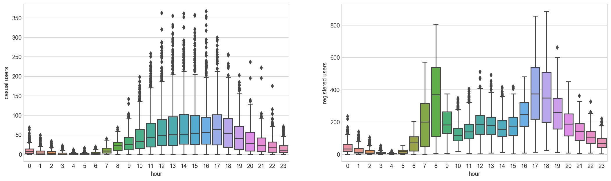
train_df[["hour","casual","registered"]].head(5)
| hour | casual | registered | |
|---|---|---|---|
| datetime | |||
| 2011-01-01 00:00:00 | 0 | 3 | 13 |
| 2011-01-01 01:00:00 | 1 | 8 | 32 |
| 2011-01-01 02:00:00 | 2 | 5 | 27 |
| 2011-01-01 03:00:00 | 3 | 3 | 10 |
| 2011-01-01 04:00:00 | 4 | 0 | 1 |
pd.melt(train_df[["hour","casual","registered"]], id_vars=['hour'], value_vars=['casual', 'registered'], var_name='usertype', value_name='count').head(5)
| hour | usertype | count | |
|---|---|---|---|
| 0 | 0 | casual | 3 |
| 1 | 1 | casual | 8 |
| 2 | 2 | casual | 5 |
| 3 | 3 | casual | 3 |
| 4 | 4 | casual | 0 |
fig, ax = plt.subplots(figsize=(18, 5))
train_df_melt = pd.melt(train_df[["hour","casual","registered"]], id_vars=['hour'], value_vars=['casual', 'registered'], var_name='usertype', value_name='count')
data = pd.DataFrame(train_df_melt.groupby(["hour", "usertype"], sort=True)["count"].mean()).reset_index()
sns.pointplot(x=data["hour"], y=data["count"], hue=data["usertype"], hue_order=["casual","registered"], ax=ax)
ax.set(xlabel='Hour Of The Day', ylabel='Users Count', title='Average Users Count By Hour Of The Day Across User Type');
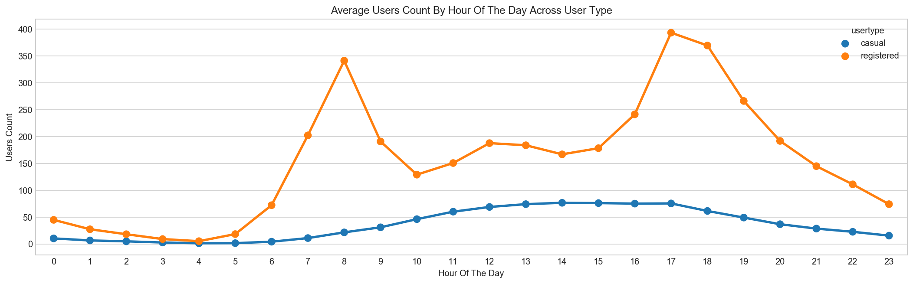
Above we can see that registered users have similar trend as count. Whereas, casual users have different trend. Thus, we can say that ‘hour’ is significant variable and our hypothesis is ‘true’.
We can notice that there are a lot of outliers while plotting the count of registered and casual users. These values are not generated due to error, so we consider them as natural outliers. They might be a result of groups of people taking up cycling (who are not registered). To treat such outliers, we will use logarithm transformation. Let’s look at the similar plot after log transformation.
train_df = train_df.assign(log_count = lambda df : np.log(train_df['count']))
fig, ax = plt.subplots(figsize=(18, 5))
sns.boxplot(x='hour', y='log_count', data=train_df, ax=ax)
ax.set(ylabel='log(count) of Users',title='Boxplot of Log of Count grouped by hour')
#plt.suptitle("") # get rid of the pandas autogenerated title
train_df.drop(['log_count'], axis = 1, inplace=True);
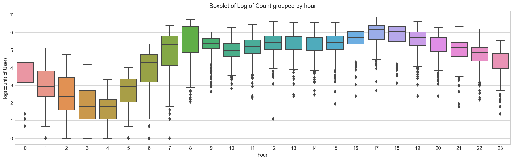
On Workdays most Bikes are rented on Warm Mornings and Evenings[2]¶
[4]When graphing a categorical variable vs. a continuous variable, it can be useful to create a scatter plot to visually examine distributions. Together with a box plot, it will allow us to see the distributions of our variables. Unfortunately, if our points occur close together, we will get a very uninformative smear. One way of making the scatter plot work is by adding jitter. With the jitter, a random amount is added or subtracted to each of the variables along the categorical axis. Where before, we may have had a categorical value vector that looked something like [1,2,2,2,1,3], post-jitter, they would look something like [1.05, 1.96, 2.05, 2, .97, 2.95]. Each value has had somewhere between [-0.05,0.05] added to it. This then means that when we plot our variables, we’ll see a cloud of points that represent our distribution, rather than a long smear.
def hour_jitter(h):
#return h + ((np.random.randint(low=0, high=9, size=1)[0] - 4) / 10)
return h + np.random.uniform(-0.4, 0.4)
def hour_format(h):
return "{:02d}:00 AM".format(h) if h <= 12 else "{:02d}:00 PM".format(h%12)
# jitter plot
import matplotlib.colors as mcolors
import matplotlib.cm as cm
# color_map = plt.get_cmap("jet")
color_map = mcolors.ListedColormap(list(["#5e4fa2", "#3288bd", "#66c2a5", "#abdda4", "#e6f598", "#fee08b", "#fdae61", "#f46d43", "#d53e4f", "#9e0142"]))
train_df['hour_jitter'] = train_df['hour'].map(hour_jitter)
train_df[train_df['workingday'] == 1].plot(kind="scatter", x='hour_jitter', y='count',
figsize=(18,6),
c='temp', cmap=color_map, colorbar=True,
sharex=False)
hours = np.unique(train_df['hour'].values)
hour_labels = [hour_format(h) for h in hours]
plt.xticks(hours, hour_labels, rotation='vertical');
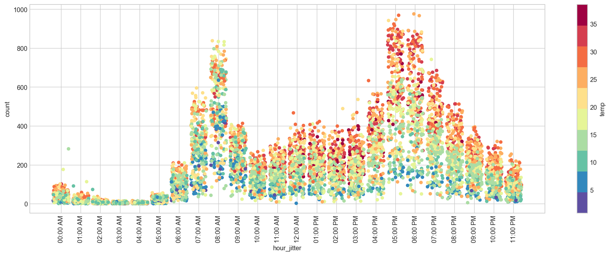
train_df.drop('hour_jitter', axis=1, inplace=True);
Daily Trend: Like Hour, we will generate a variable for day from datetime variable and after that we’ll plot it.
dayOfWeek={0:'Monday', 1:'Tuesday', 2:'Wednesday', 3:'Thursday', 4:'Friday', 5:'Saturday', 6:'Sunday'}
all_df['weekday'] = all_df['dow'].map(dayOfWeek)
fig, axs = plt.subplots(1, 2, figsize=(15,5), sharex=False, sharey=False)
sns.boxplot(x='weekday', y='registered', data=all_df, ax=axs[0])
axs[0].set_ylabel('registered users')
axs[0].set_title('')
sns.boxplot(x='weekday', y='casual', data=all_df, ax=axs[1])
axs[1].set_ylabel('casual users')
axs[1].set_title('')
all_df.drop('weekday', axis=1, inplace=True);
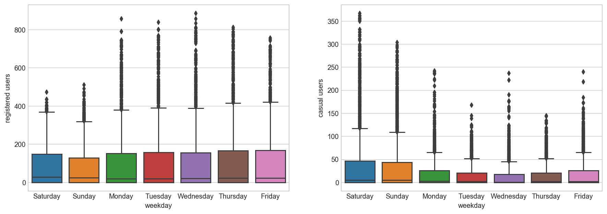
Rain: We don’t have the ‘rain’ variable with us but have ‘weather’ which is sufficient to test our hypothesis. As per variable description, weather 3 represents light rain and weather 4 represents heavy rain. Take a look at the plot:
fig, axs = plt.subplots(1, 2, figsize=(15,5), sharex=False, sharey=False)
sns.boxplot(x='weather', y='registered', data=all_df, ax=axs[0])
axs[0].set_ylabel('registered users')
axs[0].set_title('')
sns.boxplot(x='weather', y='casual', data=all_df, ax=axs[1])
axs[1].set_ylabel('casual users')
axs[1].set_title('');
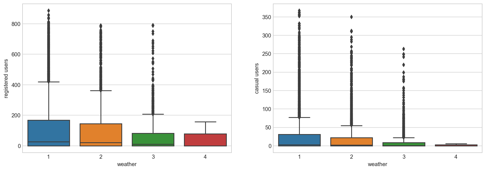
It is clearly satisfying our hypothesis.
Temperature, Windspeed and Humidity: These are continuous variables so we can look at the correlation factor to validate hypothesis.
Correlation Between Count And Features¶
sub_df = train_df[['count', 'registered', 'casual', 'temp', 'atemp', 'humidity', 'windspeed', 'workingday', 'holiday']]
sub_df.corr()
| count | registered | casual | temp | atemp | humidity | windspeed | workingday | holiday | |
|---|---|---|---|---|---|---|---|---|---|
| count | 1.000000 | 0.970948 | 0.690414 | 0.394454 | 0.389784 | -0.317371 | 0.101369 | 0.011965 | -0.008049 |
| registered | 0.970948 | 1.000000 | 0.497250 | 0.318571 | 0.314635 | -0.265458 | 0.091052 | 0.120154 | -0.023038 |
| casual | 0.690414 | 0.497250 | 1.000000 | 0.467097 | 0.462067 | -0.348187 | 0.092276 | -0.319864 | 0.040464 |
| temp | 0.394454 | 0.318571 | 0.467097 | 1.000000 | 0.984948 | -0.064949 | -0.017852 | 0.033174 | 0.002969 |
| atemp | 0.389784 | 0.314635 | 0.462067 | 0.984948 | 1.000000 | -0.043536 | -0.057473 | 0.027851 | -0.003455 |
| humidity | -0.317371 | -0.265458 | -0.348187 | -0.064949 | -0.043536 | 1.000000 | -0.318607 | -0.011039 | 0.012114 |
| windspeed | 0.101369 | 0.091052 | 0.092276 | -0.017852 | -0.057473 | -0.318607 | 1.000000 | 0.018454 | -0.000585 |
| workingday | 0.011965 | 0.120154 | -0.319864 | 0.033174 | 0.027851 | -0.011039 | 0.018454 | 1.000000 | -0.213189 |
| holiday | -0.008049 | -0.023038 | 0.040464 | 0.002969 | -0.003455 | 0.012114 | -0.000585 | -0.213189 | 1.000000 |
corrMatt = sub_df.corr()
mask = np.zeros_like(corrMatt)
mask[np.triu_indices_from(mask)] = True
fig, ax = plt.subplots(figsize=(15, 6))
sns.heatmap(corrMatt, mask=mask, vmax=.8, square=False, annot=True, ax=ax, linewidths=1);
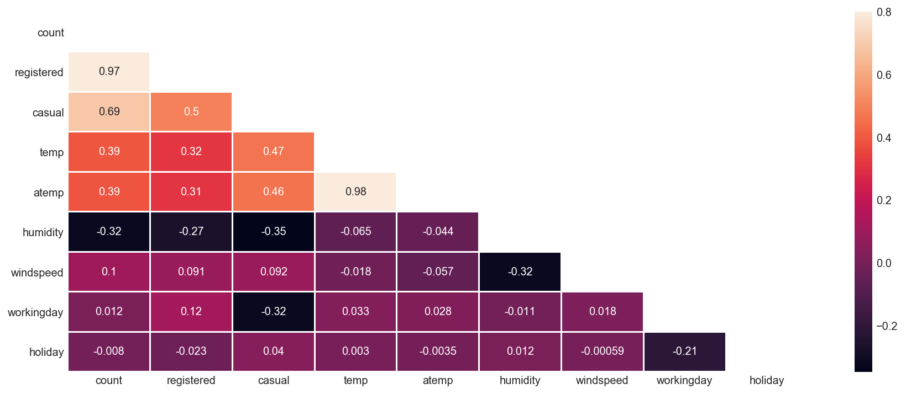
Here are a few inferences you can draw by looking at the above histograms:
Variable temp is positively correlated with dependent variables (casual is more compare to registered)
Variable atemp is highly correlated with temp.
Windspeed has lower correlation as compared to temp and humidity
Time: Let’s extract year of each observation from the datetime column and see the trend of bike demand over year.
Distribution of data between Train and Test set based on Season¶
season_map = {1:'Spring', 2:'Summer', 3:'Fall', 4:'Winter'}
data = all_df[['data_set', 'season']].copy()
data['season'] = data['season'].map(lambda d : season_map[d])
sns.countplot(x="data_set", hue="season", data=data);
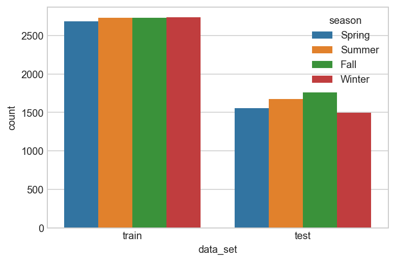
Distribution of data between Train and Test set based on Weather¶
weather_map = {1:'Good', 2:'Normal', 3:'Bad', 4:'Worse'}
data = all_df[['data_set', 'weather']].copy()
data['weather'] = data['weather'].map(lambda d : weather_map[d])
sns.countplot(x="data_set", hue="weather", data=data);
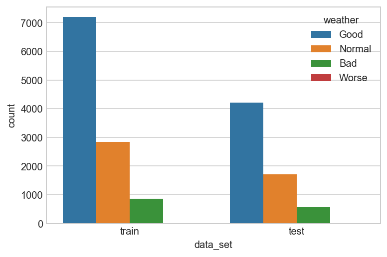
Distribution of count of users Train and Test set based on Year¶
plt.figure(figsize=(8, 5))
sns.boxplot(x='year', y='count', data=train_df)
plt.ylabel('Count of Users')
plt.title("Boxplot of Count grouped by year");
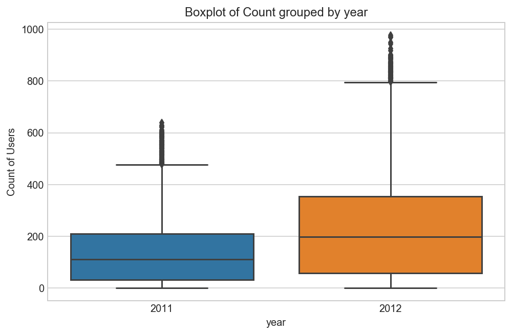
We can see that 2012 has higher bike demand as compared to 2011.
Pollution & Traffic: We don’t have the variable related with these metrics in our data set so we cannot test this hypothesis.
5. Feature Engineering¶
In addition to existing independent variables, we will create new variables to improve the prediction power of model. Initially, we have generated new variables like hour, month, day and year.
# feature engineer a new column whether its a peak hour or not
all_df['peak'] = all_df[['hour', 'workingday']]\
.apply(lambda df: 1 if ((df['workingday'] == 1 and (df['hour'] == 8 or 17 <= df['hour'] <= 18)) \
or (df['workingday'] == 0 and 10 <= df['workingday'] <= 19)) else 0, axis = 1)
# sandy
all_df['holiday'] = all_df[['month', 'day', 'holiday', 'year']]\
.apply(lambda df: 1 if (df['year'] == 2012 and df['month'] == 10 and df['day'] == 30) else 0, axis = 1)
# christmas and others
all_df['holiday'] = all_df[['month', 'day', 'holiday']]\
.apply(lambda df: 1 if (df['month'] == 12 and df['day'] in [24, 26, 31]) else df['holiday'], axis = 1)
all_df['workingday'] = all_df[['month', 'day', 'workingday']]\
.apply(lambda df: 0 if df['month'] == 12 and df['day'] in [24, 31] else df['workingday'], axis = 1)
# from histogram
all_df['ideal'] = all_df[['temp', 'windspeed']]\
.apply(lambda df: 1 if (df['temp'] > 27 and df['windspeed'] < 30) else 0, axis = 1)
all_df['sticky'] = all_df[['humidity', 'workingday']]\
.apply(lambda df: 1 if (df['workingday'] == 1 and df['humidity'] >= 60) else 0, axis = 1)
all_df.sample(10)
| atemp | casual | count | data_set | datetime | holiday | humidity | registered | season | temp | weather | windspeed | workingday | casual_log | registered_log | count_log | date | day | month | year | hour | dow | woy | count_season | peak | ideal | sticky | |
|---|---|---|---|---|---|---|---|---|---|---|---|---|---|---|---|---|---|---|---|---|---|---|---|---|---|---|---|
| datetime | |||||||||||||||||||||||||||
| 2012-08-30 02:00:00 | 29.545 | 0 | 0 | test | 2012-08-30 02:00:00 | 0 | 73 | 0 | 3 | 25.42 | 1 | 0.0000 | 1 | 0.000000 | 0.000000 | 0.000000 | 2012-08-30 | 30 | 8 | 2012 | 2 | 3 | 35 | 640662 | 0 | 0 | 1 |
| 2012-08-14 20:00:00 | 35.605 | 65 | 436 | train | 2012-08-14 20:00:00 | 0 | 74 | 371 | 3 | 30.34 | 1 | 15.0013 | 1 | 4.189655 | 5.918894 | 6.079933 | 2012-08-14 | 14 | 8 | 2012 | 20 | 1 | 33 | 640662 | 0 | 1 | 1 |
| 2012-05-01 04:00:00 | 25.000 | 1 | 8 | train | 2012-05-01 04:00:00 | 0 | 72 | 7 | 2 | 21.32 | 2 | 6.0032 | 1 | 0.693147 | 2.079442 | 2.197225 | 2012-05-01 | 1 | 5 | 2012 | 4 | 1 | 18 | 588282 | 0 | 0 | 1 |
| 2011-07-13 19:00:00 | 33.335 | 79 | 419 | train | 2011-07-13 19:00:00 | 0 | 79 | 340 | 3 | 28.70 | 1 | 7.0015 | 1 | 4.382027 | 5.831882 | 6.040255 | 2011-07-13 | 13 | 7 | 2011 | 19 | 2 | 28 | 640662 | 0 | 1 | 1 |
| 2012-02-05 09:00:00 | 11.365 | 9 | 92 | train | 2012-02-05 09:00:00 | 0 | 70 | 83 | 1 | 9.84 | 2 | 15.0013 | 0 | 2.302585 | 4.430817 | 4.532599 | 2012-02-05 | 5 | 2 | 2012 | 9 | 6 | 5 | 312498 | 0 | 0 | 0 |
| 2011-05-22 02:00:00 | 25.000 | 0 | 0 | test | 2011-05-22 02:00:00 | 0 | 94 | 0 | 2 | 21.32 | 1 | 7.0015 | 0 | 0.000000 | 0.000000 | 0.000000 | 2011-05-22 | 22 | 5 | 2011 | 2 | 6 | 20 | 588282 | 0 | 0 | 0 |
| 2011-11-11 22:00:00 | 15.910 | 13 | 91 | train | 2011-11-11 22:00:00 | 0 | 39 | 78 | 4 | 13.12 | 1 | 12.9980 | 0 | 2.639057 | 4.369448 | 4.521789 | 2011-11-11 | 11 | 11 | 2011 | 22 | 4 | 45 | 544034 | 0 | 0 | 0 |
| 2011-04-10 23:00:00 | 22.725 | 5 | 32 | train | 2011-04-10 23:00:00 | 0 | 88 | 27 | 2 | 18.86 | 1 | 23.9994 | 0 | 1.791759 | 3.332205 | 3.496508 | 2011-04-10 | 10 | 4 | 2011 | 23 | 6 | 14 | 588282 | 0 | 0 | 0 |
| 2012-05-07 15:00:00 | 31.060 | 76 | 262 | train | 2012-05-07 15:00:00 | 0 | 53 | 186 | 2 | 25.42 | 2 | 19.9995 | 1 | 4.343805 | 5.231109 | 5.572154 | 2012-05-07 | 7 | 5 | 2012 | 15 | 0 | 19 | 588282 | 0 | 0 | 0 |
| 2011-06-23 09:00:00 | 34.850 | 0 | 0 | test | 2011-06-23 09:00:00 | 0 | 70 | 0 | 3 | 30.34 | 2 | 8.9981 | 1 | 0.000000 | 0.000000 | 0.000000 | 2011-06-23 | 23 | 6 | 2011 | 9 | 3 | 25 | 640662 | 0 | 1 | 1 |
6. Training Models¶
We create a machine learning model to predict for casual and registered users separately and then combine them to generate the overall prediction for the counts.
# instead of randomly splitting our training data
# for cross validation, let's construct a framework that's more
# in line with how the data is divvied up for this competition
# (given first 19 days of each month, what is demand for remaining days)
# so, let's split our training data into 2 time contiguous datasets
# for fitting and validating our model (days 1-14 vs. days 15-19).
# also, since submissions are evaluated based on the
# root mean squared logarithmic error (RMSLE), let's replicate
# that computation as we test and tune our model.
train_df = all_df[all_df['data_set'] == 'train']
test_df = all_df[all_df['data_set'] == 'test']
def get_rmsle(y_pred, y_actual):
diff = np.log(y_pred + 1) - np.log(y_actual + 1)
mean_error = np.square(diff).mean()
return np.sqrt(mean_error)
def custom_train_valid_split(data, cutoff_day=15):
train = data[data['day'] <= cutoff_day]
valid = data[data['day'] > cutoff_day]
return train, valid
def prep_train_data(data, input_cols):
X = data[input_cols].values
y_r = data['registered_log'].values
y_c = data['casual_log'].values
return X, y_r, y_c
# predict on validation set & transform output back from log scale
def predict_on_validation_set(model, input_cols):
train, valid = custom_train_valid_split(train_df)
# prepare training & validation set
X_train, y_train_r, y_train_c = prep_train_data(train, input_cols)
X_valid, y_valid_r, y_valid_c = prep_train_data(valid, input_cols)
model_r = model.fit(X_train, y_train_r)
y_pred_r = np.exp(model_r.predict(X_valid)) - 1
model_c = model.fit(X_train, y_train_c)
y_pred_c = np.exp(model_c.predict(X_valid)) - 1
y_pred_comb = np.round(y_pred_r + y_pred_c)
y_pred_comb[y_pred_comb < 0] = 0
y_actual_comb = np.exp(y_valid_r) + np.exp(y_valid_c) - 2
rmsle = get_rmsle(y_pred_comb, y_actual_comb)
return (y_pred_comb, y_actual_comb, rmsle)
# predict on test set & transform output back from log scale
def predict_on_test_set(model, input_cols):
# prepare training set
X_train, y_train_r, y_train_c = prep_train_data(train_df, input_cols)
# prepare testing set
X_test = test_df[input_cols].values
model_c = model.fit(X_train, y_train_c)
y_pred_c = np.exp(model_c.predict(X_test)) - 1
model_r = model.fit(X_train, y_train_r)
y_pred_r = np.exp(model_r.predict(X_test)) - 1
# add casual & registered predictions together
y_pred_comb = np.round(y_pred_r + y_pred_c)
y_pred_comb[y_pred_comb < 0] = 0
return y_pred_comb
params = {'n_estimators': 1000, 'max_depth': 15, 'random_state': 0, 'min_samples_split' : 5, 'n_jobs': -1}
rf_model = RandomForestRegressor(**params)
rf_cols = [
'weather', 'temp', 'atemp', 'windspeed',
'workingday', 'season', 'holiday', 'sticky',
'hour', 'dow', 'woy', 'peak'
]
(rf_pred, rf_actual, rf_rmsle) = predict_on_validation_set(rf_model, rf_cols)
print(rf_rmsle)
0.434625932998
all_df[rf_cols].corr()
| weather | temp | atemp | windspeed | workingday | season | holiday | sticky | hour | dow | woy | peak | |
|---|---|---|---|---|---|---|---|---|---|---|---|---|
| weather | 1.000000 | -0.102640 | -0.105563 | 0.026226 | 0.042061 | -0.014524 | 0.038472 | 0.243523 | -0.020203 | -0.046424 | 0.009692 | 0.013506 |
| temp | -0.102640 | 1.000000 | 0.987672 | -0.023125 | 0.069153 | 0.312025 | -0.101406 | -0.007074 | 0.137603 | -0.036220 | 0.198641 | 0.044723 |
| atemp | -0.105563 | 0.987672 | 1.000000 | -0.062336 | 0.067594 | 0.319380 | -0.101800 | 0.004717 | 0.133750 | -0.038918 | 0.205561 | 0.042167 |
| windspeed | 0.026226 | -0.023125 | -0.062336 | 1.000000 | -0.001937 | -0.149773 | 0.008593 | -0.187671 | 0.137252 | 0.003274 | -0.131613 | 0.054581 |
| workingday | 0.042061 | 0.069153 | 0.067594 | -0.001937 | 1.000000 | 0.010879 | -0.091171 | 0.536900 | 0.002185 | -0.698028 | -0.025700 | 0.207653 |
| season | -0.014524 | 0.312025 | 0.319380 | -0.149773 | 0.010879 | 1.000000 | -0.109490 | 0.095556 | -0.006117 | -0.007448 | 0.814302 | -0.001289 |
| holiday | 0.038472 | -0.101406 | -0.101800 | 0.008593 | -0.091171 | -0.109490 | 1.000000 | -0.029345 | 0.007158 | -0.049770 | 0.104596 | -0.004713 |
| sticky | 0.243523 | -0.007074 | 0.004717 | -0.187671 | 0.536900 | 0.095556 | -0.029345 | 1.000000 | -0.186289 | -0.399949 | 0.096672 | 0.050274 |
| hour | -0.020203 | 0.137603 | 0.133750 | 0.137252 | 0.002185 | -0.006117 | 0.007158 | -0.186289 | 1.000000 | -0.002893 | -0.005437 | 0.124008 |
| dow | -0.046424 | -0.036220 | -0.038918 | 0.003274 | -0.698028 | -0.007448 | -0.049770 | -0.399949 | -0.002893 | 1.000000 | 0.009368 | -0.148325 |
| woy | 0.009692 | 0.198641 | 0.205561 | -0.131613 | -0.025700 | 0.814302 | 0.104596 | 0.096672 | -0.005437 | 0.009368 | 1.000000 | -0.007311 |
| peak | 0.013506 | 0.044723 | 0.042167 | 0.054581 | 0.207653 | -0.001289 | -0.004713 | 0.050274 | 0.124008 | -0.148325 | -0.007311 | 1.000000 |
params = {'n_estimators': 150, 'max_depth': 5, 'random_state': 0, 'min_samples_leaf' : 10, 'learning_rate': 0.1, 'subsample': 0.7, 'loss': 'ls'}
gbm_model = GradientBoostingRegressor(**params)
gbm_cols = [
'weather', 'temp', 'atemp', 'humidity', 'windspeed',
'holiday', 'workingday', 'season',
'hour', 'dow', 'year', 'ideal', 'count_season',
]
(gbm_pred, gbm_actual, gbm_rmsle) = predict_on_validation_set(gbm_model, gbm_cols)
print(gbm_rmsle)
0.313091436534
all_df[gbm_cols].corr()
| weather | temp | atemp | humidity | windspeed | holiday | workingday | season | hour | dow | year | ideal | count_season | |
|---|---|---|---|---|---|---|---|---|---|---|---|---|---|
| weather | 1.000000 | -0.102640 | -0.105563 | 0.418130 | 0.026226 | 0.038472 | 0.042061 | -0.014524 | -0.020203 | -0.046424 | -0.019157 | -0.145407 | -0.051863 |
| temp | -0.102640 | 1.000000 | 0.987672 | -0.069881 | -0.023125 | -0.101406 | 0.069153 | 0.312025 | 0.137603 | -0.036220 | 0.040913 | 0.727266 | 0.705172 |
| atemp | -0.105563 | 0.987672 | 1.000000 | -0.051918 | -0.062336 | -0.101800 | 0.067594 | 0.319380 | 0.133750 | -0.038918 | 0.039222 | 0.701874 | 0.701434 |
| humidity | 0.418130 | -0.069881 | -0.051918 | 1.000000 | -0.290105 | 0.014029 | 0.014316 | 0.150625 | -0.276498 | -0.035233 | -0.083546 | -0.141678 | 0.113724 |
| windspeed | 0.026226 | -0.023125 | -0.062336 | -0.290105 | 1.000000 | 0.008593 | -0.001937 | -0.149773 | 0.137252 | 0.003274 | -0.008740 | -0.051489 | -0.113048 |
| holiday | 0.038472 | -0.101406 | -0.101800 | 0.014029 | 0.008593 | 1.000000 | -0.091171 | -0.109490 | 0.007158 | -0.049770 | 0.006293 | -0.054138 | -0.146902 |
| workingday | 0.042061 | 0.069153 | 0.067594 | 0.014316 | -0.001937 | -0.091171 | 1.000000 | 0.010879 | 0.002185 | -0.698028 | -0.007959 | 0.023068 | 0.044535 |
| season | -0.014524 | 0.312025 | 0.319380 | 0.150625 | -0.149773 | -0.109490 | 0.010879 | 1.000000 | -0.006117 | -0.007448 | -0.010742 | 0.156455 | 0.663537 |
| hour | -0.020203 | 0.137603 | 0.133750 | -0.276498 | 0.137252 | 0.007158 | 0.002185 | -0.006117 | 1.000000 | -0.002893 | -0.003867 | 0.113745 | -0.008248 |
| dow | -0.046424 | -0.036220 | -0.038918 | -0.035233 | 0.003274 | -0.049770 | -0.698028 | -0.007448 | -0.002893 | 1.000000 | 0.000977 | -0.009208 | -0.014472 |
| year | -0.019157 | 0.040913 | 0.039222 | -0.083546 | -0.008740 | 0.006293 | -0.007959 | -0.010742 | -0.003867 | 0.000977 | 1.000000 | 0.000788 | -0.009706 |
| ideal | -0.145407 | 0.727266 | 0.701874 | -0.141678 | -0.051489 | -0.054138 | 0.023068 | 0.156455 | 0.113745 | -0.009208 | 0.000788 | 1.000000 | 0.462633 |
| count_season | -0.051863 | 0.705172 | 0.701434 | 0.113724 | -0.113048 | -0.146902 | 0.044535 | 0.663537 | -0.008248 | -0.014472 | -0.009706 | 0.462633 | 1.000000 |
7. Stacking¶
We can combine the predictions of two or more models to create a meta prediction.
It’s much like cross validation. Take 5-fold stacking as an example. First we split the training data into 5 folds. Next we will do 5 iterations. In each iteration, train every base model on 4 folds and predict on the hold-out fold. We have to keep the predictions on the testing data as well. This way, in each iteration every base model will make predictions on 1 fold of the training data and all of the testing data. After 5 iterations we will obtain a matrix of shape #(samples in training data) X #(base models). This matrix is then fed to the stacker (it’s just another model) in the second level. After the stacker is fitted, use the predictions on testing data by base models (each base model is predicts on the test data, since there are 5 base models we will get 5 predictions on thesame test data, therefore we have to take an average to obtain a matrix of the same shape) as the input for the stacker and obtain our final predictions.

7.1 Manual Stacking¶
We can stack the predictions of two or more different models in a pre-defined weighted mechanism to get the final prediction. Instead of relying on the prediction of a single model we average out the predictions from two or more models.
# the blend gives a better score on the leaderboard, even though it does not on the validation set
y_pred = np.round(.2*rf_pred + .8*gbm_pred)
print(get_rmsle(y_pred, rf_actual))
0.316017221761
rf_pred = predict_on_test_set(rf_model, rf_cols)
gbm_pred = predict_on_test_set(gbm_model, gbm_cols)
y_pred = np.round(.2*rf_pred + .8*gbm_pred)
# output predictions for submission
submit_manual_blend_df = test_df[['datetime', 'count']].copy()
submit_manual_blend_df['count'] = y_pred
submit_manual_blend_df.head(5)
| datetime | count | |
|---|---|---|
| datetime | ||
| 2011-01-20 00:00:00 | 2011-01-20 00:00:00 | 13.0 |
| 2011-01-20 01:00:00 | 2011-01-20 01:00:00 | 5.0 |
| 2011-01-20 02:00:00 | 2011-01-20 02:00:00 | 3.0 |
| 2011-01-20 03:00:00 | 2011-01-20 03:00:00 | 2.0 |
| 2011-01-20 04:00:00 | 2011-01-20 04:00:00 | 2.0 |
submit_manual_blend_df.to_csv('output/submit_manual_blend.csv', index=False)
7.1 Stacking with Linear Regression¶
In the previous section we manually assigned weights to the two classifiers and blended the predictions. Here we will train the same two classifiers with different input cols on the data and then combine the predictions of the two classifiers using a LinearRegressor. The LinearRegressor acts as a meta-classifier which learnes what should be the weighted combination of the two level 0 classifiers.
# Level 0 RandomForestRegressor
rf_params = {'n_estimators': 1000, 'max_depth': 15, 'random_state': 0, 'min_samples_split' : 5, 'n_jobs': -1}
rf_model = RandomForestRegressor(**rf_params)
rf_cols = [
'weather', 'temp', 'atemp', 'windspeed',
'workingday', 'season', 'holiday', 'sticky',
'hour', 'dow', 'woy', 'peak'
]
# Level 0 GradientBoostingRegressor
gbm_params = {'n_estimators': 150, 'max_depth': 5, 'random_state': 0, 'min_samples_leaf' : 10, 'learning_rate': 0.1, 'subsample': 0.7, 'loss': 'ls'}
gbm_model = GradientBoostingRegressor(**gbm_params)
gbm_cols = [
'weather', 'temp', 'atemp', 'humidity', 'windspeed',
'holiday', 'workingday', 'season',
'hour', 'dow', 'year', 'ideal', 'count_season',
]
clf_input_cols = [rf_cols, gbm_cols]
clfs = [rf_model, gbm_model]
# Create train and test sets for blending and Pre-allocate the data
blend_train = np.zeros((train_df.shape[0], len(clfs)))
blend_test = np.zeros((test_df.shape[0], len(clfs)))
# For each classifier, we train the classifier with its corresponding input_cols
# and record the predictions on the train and the test set
for clf_index, (input_cols, clf) in enumerate(zip(clf_input_cols, clfs)):
# prepare training and validation set
X_train, y_train_r, y_train_c = prep_train_data(train_df, input_cols)
# prepare testing set
X_test = test_df[input_cols].values
model_r = clf.fit(X_train, y_train_r)
y_pred_train_r = np.exp(model_r.predict(X_train)) - 1
y_pred_test_r = np.exp(model_r.predict(X_test)) - 1
model_c = clf.fit(X_train, y_train_c)
y_pred_train_c = np.exp(model_c.predict(X_train)) - 1
y_pred_test_c = np.exp(model_c.predict(X_test)) - 1
y_pred_train_comb = np.round(y_pred_train_r + y_pred_train_c)
y_pred_train_comb[y_pred_train_comb < 0] = 0
y_pred_test_comb = np.round(y_pred_test_r + y_pred_test_c)
y_pred_test_comb[y_pred_test_comb < 0] = 0
blend_train[:, clf_index] = y_pred_train_comb
blend_test[:, clf_index] = y_pred_test_comb
# Level 1 Belending Classifier using LinearRegression
from sklearn.linear_model import LinearRegression
bclf = LinearRegression(fit_intercept=False)
bclf.fit(blend_train, train_df['count'])
LinearRegression(copy_X=True, fit_intercept=False, n_jobs=1, normalize=False)
# What is the weighted combination of the base classifiers?
bclf.coef_
array([ 0.31355465, 0.73048534])
We observe that the meta-learner LinearRegression has assigned weights 0.3 to the RandomForestRegressor and 0.7 to the GradientBoostingRegressor similar to the ones we did manually in the previous step.
# Stacked and Blending predictions
y_pred_blend = np.round(bclf.predict(blend_test))
# R^2 score
bclf.score(blend_train, train_df['count'])
0.96562432974162338
# output predictions for submission
submit_stack_blend_df = test_df[['datetime', 'count']].copy()
submit_stack_blend_df['count'] = y_pred_blend
submit_stack_blend_df.head(5)
| datetime | count | |
|---|---|---|
| datetime | ||
| 2011-01-20 00:00:00 | 2011-01-20 00:00:00 | 13.0 |
| 2011-01-20 01:00:00 | 2011-01-20 01:00:00 | 6.0 |
| 2011-01-20 02:00:00 | 2011-01-20 02:00:00 | 3.0 |
| 2011-01-20 03:00:00 | 2011-01-20 03:00:00 | 2.0 |
| 2011-01-20 04:00:00 | 2011-01-20 04:00:00 | 2.0 |
submit_stack_blend_df.to_csv('output/submit_stack_blend.csv', index=False)
References:
Blogs without which this notebook would not have been possible
[1] https://www.analyticsvidhya.com/blog/2015/06/solution-kaggle-competition-bike-sharing-demand/
[2]https://www.kaggle.com/benhamner/bike-rentals-by-time-and-temperature
[3]https://github.com/logicalguess/kaggle-bike-sharing-demand
[4]http://dataviztalk.blogspot.com/2016/02/how-to-add-jitter-to-plot-using-pythons.html
[5]https://www.kaggle.com/anuragreddy333/data-vizualization/code
[6][https://dnc1994.com/2016/05/rank-10-percent-in-first-kaggle-competition-en/]